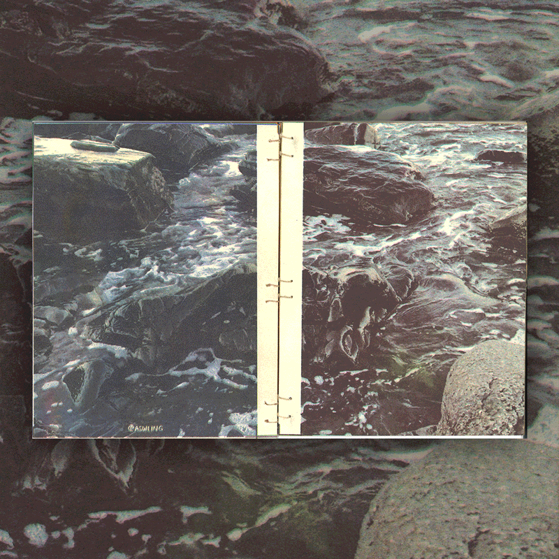

Four-color risograph zine / Self-published at the SVA RisoLAB (2024)
FAR & NEAR is a 12-page hand-bound book with a photo on one side and a postcard template on the other side. The postcard side includes where the photo was taken and the loved ones I was with. FAR & NEAR was designed to be a photo book and a set of cards—each page was hand-scored so the reader can tear out the pages and use them as postcards to send to their own loved ones.
The photos were taken over the last few years during trips with friends. My phone camera is quite old, so to compensate I was leaning into the quality crumminess by zooming into everything to the point where it became difficult to discern the subject. Although these photos started off silly, I started seeing them as memories of being with people I care about. The photos are close-up while the specific moments are increasingly distant, but the friendships are forever close to my heart.
